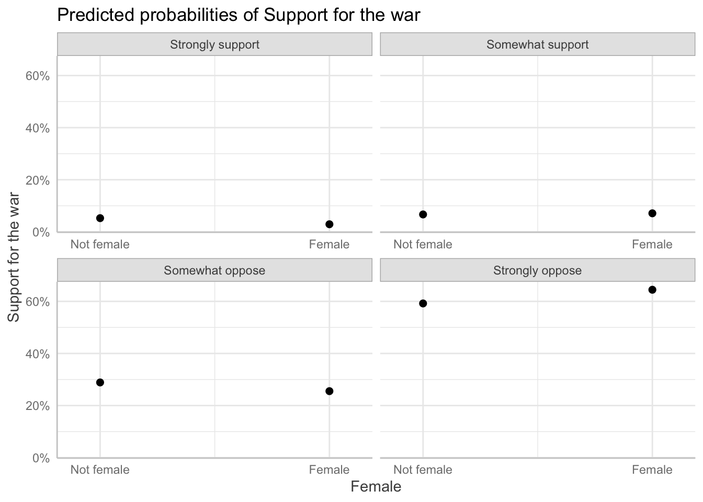

library(tidyverse)
library(janitor)
library(skimr)
library(nnet)
library(broom)
library(marginaleffects)
library(gtsummary)
library(ggeffects)Measuring Marginal Effects on Multiple Outcomes
Set up
This section uses the following packages:
We will use the same data as the previous section:
student_survey <- rio::import("/Users/harrietgoers/Downloads/student vote GVPT 729a.dta") |>
transmute(warsup = factor(warsup,
levels = c(1, 2, 3, 4),
labels = c("Strongly support",
"Somewhat support",
"Somewhat oppose",
"Strongly oppose")),
female = factor(female,
levels = c(0, 1),
labels = c("Not female", "Female")),
pid = factor(pid,
levels = c(1, 2, 3, 4, 5, 6, 7),
labels = c("Strong democrat",
"Weak democrat",
"Independent democrat",
"Independent",
"Independent republican",
"Weak republican",
"Strong republican"))) |>
labelled::set_variable_labels(warsup = "Support for the war",
female = "Female",
pid = "Party ID") |>
drop_na()
head(student_survey) warsup female pid
1 Somewhat oppose Female Weak democrat
2 Somewhat support Female Strong republican
3 Strongly support Not female Independent
4 Strongly support Female Strong republican
5 Strongly support Not female Independent republican
6 Strongly support Female Strong republicanMultinomial logit regression
Interpreting the coefficients
Let’s take another look at the model we created previously:
m1 <- multinom(warsup ~ female + pid, data = student_survey)# weights: 36 (24 variable)
initial value 1599.783693
iter 10 value 1269.729784
iter 20 value 1238.972501
iter 30 value 1232.894042
final value 1232.880028
convergedtbl_regression(m1, intercept = T)| Characteristic | log(OR)1 | 95% CI1 | p-value |
|---|---|---|---|
| Somewhat support | |||
| (Intercept) | 0.24 | -0.60, 1.1 | 0.6 |
| Female | |||
| Not female | — | — | |
| Female | 0.65 | 0.30, 1.0 | <0.001 |
| Party ID | |||
| Strong democrat | — | — | |
| Weak democrat | 0.53 | -0.52, 1.6 | 0.3 |
| Independent democrat | 0.69 | -0.44, 1.8 | 0.2 |
| Independent | -0.28 | -1.3, 0.76 | 0.6 |
| Independent republican | -0.32 | -1.3, 0.63 | 0.5 |
| Weak republican | -0.41 | -1.3, 0.48 | 0.4 |
| Strong republican | -1.3 | -2.2, -0.44 | 0.003 |
| Somewhat oppose | |||
| (Intercept) | 1.7 | 1.0, 2.4 | <0.001 |
| Female | |||
| Not female | — | — | |
| Female | 0.47 | 0.03, 0.90 | 0.035 |
| Party ID | |||
| Strong democrat | — | — | |
| Weak democrat | -0.15 | -1.1, 0.79 | 0.7 |
| Independent democrat | -0.11 | -1.1, 0.92 | 0.8 |
| Independent | -2.5 | -3.6, -1.4 | <0.001 |
| Independent republican | -2.2 | -3.1, -1.3 | <0.001 |
| Weak republican | -3.4 | -4.3, -2.5 | <0.001 |
| Strong republican | -5.3 | -6.4, -4.1 | <0.001 |
| Strongly oppose | |||
| (Intercept) | 2.4 | 1.7, 3.1 | <0.001 |
| Female | |||
| Not female | — | — | |
| Female | 0.68 | 0.26, 1.1 | 0.001 |
| Party ID | |||
| Strong democrat | — | — | |
| Weak democrat | -0.79 | -1.7, 0.13 | 0.092 |
| Independent democrat | -0.40 | -1.4, 0.59 | 0.4 |
| Independent | -2.0 | -2.9, -1.1 | <0.001 |
| Independent republican | -3.4 | -4.3, -2.5 | <0.001 |
| Weak republican | -4.7 | -5.6, -3.7 | <0.001 |
| Strong republican | -6.1 | -7.2, -5.0 | <0.001 |
| 1 OR = Odds Ratio, CI = Confidence Interval | |||
We have three options for interpreting coefficients in multinomial logistic regression.
Relative log odds
Similar to log odds ratios in binary logistic regression, these can be interpreted as the effect of a one-unit change in \(x_i\) on the log odds of being in category 2 compared to being in category 1.
For example, identifying as female is associated with a 0.676 change in the log odds of strongly opposing compared to strongly supporting the war in Iraq.
This is the default output for our model:
tidy(m1)# A tibble: 24 × 6
y.level term estimate std.error stati…¹ p.value
<chr> <chr> <dbl> <dbl> <dbl> <dbl>
1 Somewhat support (Intercept) 0.239 0.427 0.560 5.76e-1
2 Somewhat support femaleFemale 0.655 0.181 3.61 3.06e-4
3 Somewhat support pidWeak democrat 0.535 0.540 0.991 3.22e-1
4 Somewhat support pidIndependent democrat 0.691 0.578 1.20 2.32e-1
5 Somewhat support pidIndependent -0.284 0.531 -0.535 5.93e-1
6 Somewhat support pidIndependent republican -0.323 0.484 -0.667 5.04e-1
7 Somewhat support pidWeak republican -0.406 0.450 -0.902 3.67e-1
8 Somewhat support pidStrong republican -1.30 0.439 -2.97 3.01e-3
9 Somewhat oppose (Intercept) 1.70 0.377 4.52 6.30e-6
10 Somewhat oppose femaleFemale 0.468 0.222 2.11 3.49e-2
# … with 14 more rows, and abbreviated variable name ¹statisticRelative risk ratios
Similar to odds ratios in binary logistic regression, these can be interpreted as the effect of a one-unit change in \(x_i\) on the probability of being in category 2 compared to being in category 1.
For example, identifying as female is associated with a 197% change in the probability of strongly opposing compared to strongly supporting the war in Iraq.
You can get this using broom::tidy():
tidy(m1, exponentiate = T)# A tibble: 24 × 6
y.level term estimate std.error stati…¹ p.value
<chr> <chr> <dbl> <dbl> <dbl> <dbl>
1 Somewhat support (Intercept) 1.27 0.427 0.560 5.76e-1
2 Somewhat support femaleFemale 1.92 0.181 3.61 3.06e-4
3 Somewhat support pidWeak democrat 1.71 0.540 0.991 3.22e-1
4 Somewhat support pidIndependent democrat 2.00 0.578 1.20 2.32e-1
5 Somewhat support pidIndependent 0.753 0.531 -0.535 5.93e-1
6 Somewhat support pidIndependent republican 0.724 0.484 -0.667 5.04e-1
7 Somewhat support pidWeak republican 0.666 0.450 -0.902 3.67e-1
8 Somewhat support pidStrong republican 0.272 0.439 -2.97 3.01e-3
9 Somewhat oppose (Intercept) 5.49 0.377 4.52 6.30e-6
10 Somewhat oppose femaleFemale 1.60 0.222 2.11 3.49e-2
# … with 14 more rows, and abbreviated variable name ¹statisticPredicted probabilities
This describes the probability that an observation will be in a category for a given a set of observed values.
For example, the predicted probability that a strong democratic female will strongly support the war in Iraq is 3%. The predicted probability that she will strongly oppose the war is 64%.
broom::augment() does not currently support multinomial regression. Instead, we can use base R’s predict():
predict(m1, newdata = tibble(female = factor("Female"), pid = factor("Strong democrat")), type = "probs")Strongly support Somewhat support Somewhat oppose Strongly oppose
0.02910128 0.07112958 0.25530009 0.64446905 We can plot these predicted probabilities across our outcomes and variable options using ggeffects::ggeffect():
ggeffect(m1, terms = "female") |>
plot()
ggeffect(m1, terms = "pid") |>
plot()Marginal effects in multinomial logistic regression
We can interpret the marginal effects of a one-unit change in \(x_i\) on the change in probability that an observation will fall into one category.
For example, moving from a strong republican to a strong democrat decreases the probability that an individual will strongly support the war in Iraq by 59%.
You can calculate the marginal effects of each change using marginaleffects::marginaleffects():
marginaleffects::marginaleffects(m1, variables = "pid", type = "probs") |>
summary() Group Term Contrast Effect
1 Strongly support pid Weak democrat - Strong democrat 0.019132
2 Strongly support pid Independent democrat - Strong democrat 0.007698
3 Strongly support pid Independent - Strong democrat 0.154985
4 Strongly support pid Independent republican - Strong democrat 0.238355
5 Strongly support pid Weak republican - Strong democrat 0.344832
6 Strongly support pid Strong republican - Strong democrat 0.593819
7 Somewhat support pid Weak democrat - Strong democrat 0.107264
8 Somewhat support pid Independent democrat - Strong democrat 0.096196
9 Somewhat support pid Independent - Strong democrat 0.191194
10 Somewhat support pid Independent republican - Strong democrat 0.293315
11 Somewhat support pid Weak republican - Strong democrat 0.396350
12 Somewhat support pid Strong republican - Strong democrat 0.251273
13 Somewhat oppose pid Weak democrat - Strong democrat 0.074992
14 Somewhat oppose pid Independent democrat - Strong democrat 0.020728
15 Somewhat oppose pid Independent - Strong democrat -0.158975
16 Somewhat oppose pid Independent republican - Strong democrat -0.061454
17 Somewhat oppose pid Weak republican - Strong democrat -0.178737
18 Somewhat oppose pid Strong republican - Strong democrat -0.246827
19 Strongly oppose pid Weak democrat - Strong democrat -0.201387
20 Strongly oppose pid Independent democrat - Strong democrat -0.124623
21 Strongly oppose pid Independent - Strong democrat -0.187204
22 Strongly oppose pid Independent republican - Strong democrat -0.470216
23 Strongly oppose pid Weak republican - Strong democrat -0.562446
24 Strongly oppose pid Strong republican - Strong democrat -0.598266
Std. Error z value Pr(>|z|) 2.5 % 97.5 %
1 0.02135 0.8962 0.37012019 -0.02271 0.06097
2 0.02072 0.3716 0.71021798 -0.03291 0.04831
3 0.04523 3.4263 0.00061186 0.06633 0.24364
4 0.04567 5.2186 1.8032e-07 0.14883 0.32788
5 0.04077 8.4572 < 2.22e-16 0.26492 0.42475
6 0.03485 17.0373 < 2.22e-16 0.52551 0.66213
7 0.03189 3.3634 0.00076985 0.04476 0.16977
8 0.03338 2.8822 0.00394892 0.03078 0.16161
9 0.05145 3.7159 0.00020246 0.09035 0.29204
10 0.05066 5.7898 7.0456e-09 0.19402 0.39261
11 0.04314 9.1868 < 2.22e-16 0.31179 0.48091
12 0.03539 7.0998 1.2491e-12 0.18191 0.32064
13 0.04467 1.6787 0.09320863 -0.01256 0.16255
14 0.04576 0.4530 0.65057172 -0.06896 0.11042
15 0.04522 -3.5155 0.00043893 -0.24761 -0.07034
16 0.04979 -1.2343 0.21708356 -0.15904 0.03613
17 0.03698 -4.8329 1.3458e-06 -0.25122 -0.10625
18 0.03050 -8.0934 5.8016e-16 -0.30660 -0.18705
19 0.04730 -4.2573 2.0690e-05 -0.29410 -0.10867
20 0.05025 -2.4799 0.01314367 -0.22312 -0.02613
21 0.06335 -2.9552 0.00312464 -0.31136 -0.06305
22 0.04776 -9.8444 < 2.22e-16 -0.56383 -0.37660
23 0.03671 -15.3225 < 2.22e-16 -0.63439 -0.49050
24 0.03298 -18.1424 < 2.22e-16 -0.66290 -0.53363
Model type: multinom
Prediction type: probs